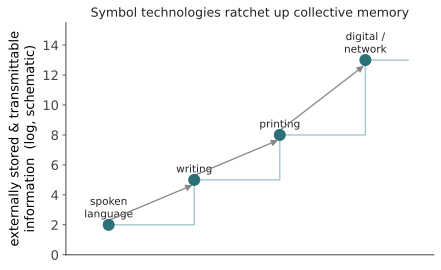

本页目录
文明 II · 识字性与语言起源
对标：Ong《Orality and Literacy》、Dehaene《Reading in the Brain》、Deacon《The Symbolic Species》、Tomasello《Origins of Human Communication》、Goody《The Domestication of the Savage Mind》｜ 前置：civ-01 ｜ 证据地位：识字重塑认知【实】（神经影像 + 跨文化）；语言起源【争/思】（无化石直接证据）。 两个主题，一因一果：向后看语言从哪来（起源之谜），向前看文字做了什么（外部记忆 + 重写大脑）。前者证据稀薄、必须诚实标注思辨；后者证据扎实、是"符号技术改造心智"的最好实证。
1. 文字：外部记忆的发明
口语（civ-01）让文化能累积，但口语转瞬即逝、受个体记忆容量限制。文字（约公元前 3200 年，苏美尔楔形文字起）是一次认知革命：它把符号从时间中解放出来，存进空间（泥板、纸、硬盘）。
信息论视角：文字是一个近乎无损、无限期、可无限复制的外部存储信道。它的后果是量级的——
- 累积容量解锁：知识不再受"活人记忆"上限约束，可无限堆叠（承 civ-01 棘轮）。
- 传递保真度跃升：抄写比口耳相传丢失的 bits 少得多——把累积文化推过又一个阈值。
- 异步、远程通信：作者与读者不必同时同地——集体大脑（civ-01）的连线范围暴涨。

2. 文字重写大脑：神经元再利用
最惊人的【实】证据来自 Dehaene：阅读不是天生的——文字发明才 5000 年，远不够演化出"阅读脑区"。大脑靠神经元再利用（neuronal recycling）学会读写：
- 学习阅读会征用一块本来用于物体/面孔识别的皮层（左枕颞区，"视觉词形区"VWFA），把它改造成字母/字形识别器。
- 代价：识字者对面孔的某些加工会轻微让位——大脑资源是被重新分配的，不是白添的。
- 这在脑成像里清晰可见，识字者 vs 文盲的大脑组织可测地不同。
这是"符号技术改造生物大脑"的直接证据（呼应 civ-01 的基因-文化共演化，但这里是发育尺度而非演化尺度）。它给轴 II（语言塑造思想）提供了一个硬核、可测的支点：一项文化发明（书写）物理地改变了大脑的组织。注意分层：这证明的是"书写重塑加工架构"（【实】），不直接证明"书写改变你能想什么"（那是更强的 Whorf 主张，【争】，见线五 mind-02）。
3. 口语心智 vs 识字心智
Ong 与 Goody 论证：识字不只是加了个技能，它重构了思维方式（这条较强，部分【争】）：
| 口语文化的思维 | 识字文化的思维 |
|---|---|
| 情节化、程式化、易记（史诗、谚语） | 分析性、可回看、可批注 |
| 累加式（and…and…） | 从属式、逻辑嵌套 |
| 依赖当下语境与在场 | 抽象、去语境、可孤立命题 |
| 知识 = 记住的 | 知识 = 可查的（外部化） |
核心洞见：文字让思维可以对象化自己——你能把一个论证写下来，然后审视、批改、反驳它。逻辑、哲学、科学这些需要"把思想当对象操作"的活动，可能依赖书写这种外部媒介。心智把自己的产物摆到体外，才学会系统地检查它。（承 civ-01 §5 分布式认知，接 civ-03。）
对你研究的挑动：如果连"逻辑推理"都部分是文字技术的产物而非纯生物天赋，那么"人类智能"里有多少是语言/符号技术塑造的、多少是生物先天的？——这正是乙问（人的智能是否源于语言）最实在的一个版本，而且有神经与历史证据可抓，不必停在思辨。
4. 语言的起源：证据稀薄地带（诚实标注）
转向更难的一半：语言本身从哪来、何时来？ 这里没有化石（软组织、行为不留痕），证据是间接的（解剖、基因、考古代用指标、比较认知），所以必须标【争/思】，各家分歧极大：
- 何时：从约 200 万年前（直立人的原始沟通）到约 5–10 万年前（现代语言随"行为现代性"爆发）——跨度极大，无定论。
- 渐变 vs 突现：语言是逐步从原始沟通演化（Tomasello、多数演化语言学），还是某个突变（如 Merge 的出现，Chomsky-Berwick）一步到位？——这直接是 ling-02 递归主张的演化版。
- 手势先行（gesture-first）：语言可能始于手势，后转入声道（有镜像神经元、手语的证据支持）。
- 共演化（Deacon）：语言与大脑相互选择，象征能力（symbolic reference）是关键跨越——从"指示/图像"符号跃到"象征"符号（任意、系统、组合），是人类独有的认知门槛。
5. Deacon 的象征跨越：一个可用的框架
Deacon《The Symbolic Species》给了一个比"何时/渐变"更有用的机制问题（借 Peirce 的符号三分）：
- 图像符号（icon）：靠相似（画一只虎像虎）——很多动物有。
- 指示符号（index）：靠因果/共现关联（烟指示火，警报指示危险）——不少动物有。
- 象征符号（symbol）：靠符号之间的系统关系（任意、组合、递归）——人类独有。
跨越的难点：从 index 到 symbol，要求学习者不再逐个记"符号↔物"的关联，而是掌握符号↔符号的整个系统（承 ling-01 差异系统、mean-01 分布假说）。Deacon 论证这个跨越又难又反直觉（孩子和被训练的黑猩猩都卡在这），但一旦跨过，就解锁了组合无穷。
这个框架对你极有用：它把"语言起源"从"何时"的考据泥潭，转成"从关联学习到系统性符号学习的相变"——一个可在 LLM/儿童/动物身上分别研究的认知问题。又一次，把不可考据的历史问题，改写成可实验的机制问题。
6. 要点与思考
思考 1（技术改造心智，可测） 识字的神经证据（§2）是全课少见的"文化发明物理改变大脑"的铁证。它给你一条稳的研究缝：哪些'人类智能'其实是符号技术（口语→文字→数字）的产物？ 这条缝可考据、可成像、可跨文化比较——比空谈"语言造就智能"扎实得多。
思考 2（起源问题要会转化） 语言起源本身证据稀薄（【思】多），硬啃容易空转。Deacon 的招法值得学：把"何时/怎么起源"转成"象征跨越是什么样的认知相变"，后者能在现存系统（儿童、LLM、灵长类）上实验。遇到不可考据的历史大问，找它的"现存可测代理"。
思考 3（做得动的·思想实验） labs 思想实验："给黑猩猩一套形式符号系统，它能跨过 index→symbol 的门槛吗？"——对照真实的 Kanzi/Nim 实验结果，你会摸清"象征能力"到底卡在哪、需要什么支架。这直接连回线三接地问题（mean-03）与线六机器涌现（ai-01）。\(\blacksquare\)
下一页：文明 III——分布式认知与集体智能。前两页反复出现同一个影子：智能不全在单个头脑里。这一页把它讲透——心智如何延伸到语言、工具与他人之中，科学与文明如何是一台没有人懂全部却整体在推进的分布式机器。这是丙问最坚实的落点。